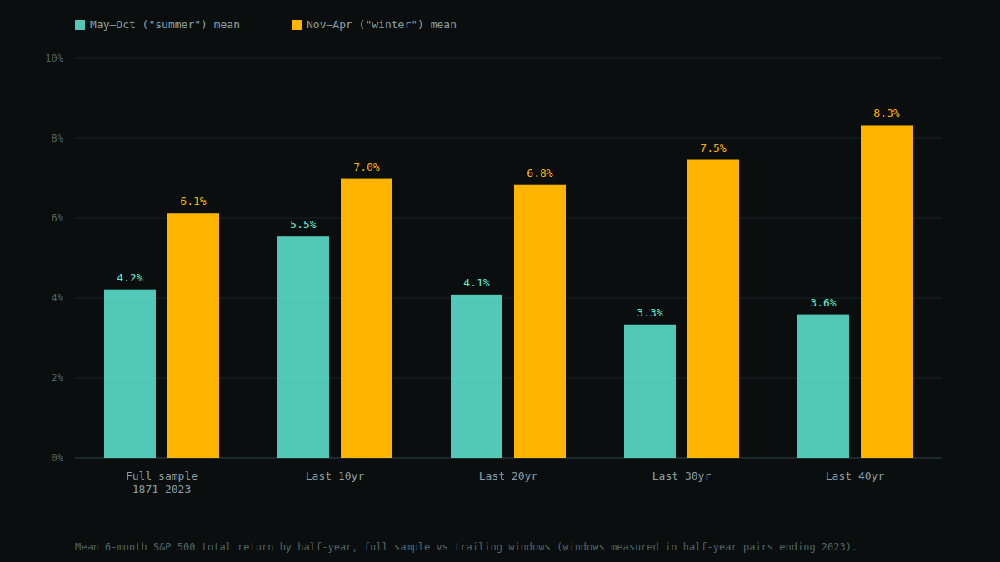
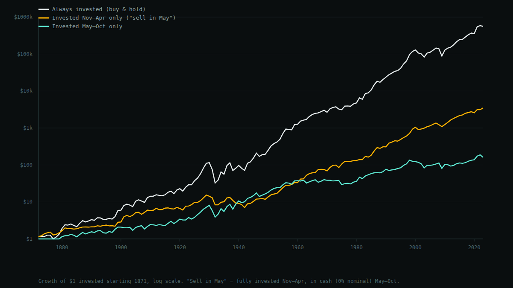

Does "Sell in May and Go Away" Actually Work? A 152-Year Test
"Sell in May and go away" is one of the oldest lines in market folklore, and it resurfaces every spring in financial media — Fidelity, the Motley Fool, and Seeking Alpha have all run some version of the same explainer. It's not pure superstition, either: economists Sven Bouman and Ben Jacobsen formalized it in a 2002 American Economic Review paper, "The Halloween Indicator, 'Sell in May and Go Away': Another Puzzle," which found winter (November–April) returns significantly higher than summer (May–October) returns in 36 of 37 countries they examined. That's a specific, falsifiable claim about U.S. stocks specifically, so I tested it directly against 152 years of S&P 500 data — the same dataset used for this blog's leverage backtest — and pushed one step further: is the effect still there in the most recent data, and does knowing about it actually make you money?
Short version: the seasonal split is real and has not disappeared — winter has beaten summer, on average, in every rolling window tested, right down to the last 10 years. But the popular, actionable version of the advice — go to cash every summer — would have been a bad strategy, because summer's average return, while lower than winter's, is still positive most of the time. Simply staying invested through both halves beats either "only winter" or "only summer" by a wide margin.
Methodology
I used Robert Shiller's monthly S&P 500 dataset (price and dividends), the same source and the same January 1871 – June 2023 cutoff as this blog's leverage backtest, for consistency and because that's the last month with fully populated dividend data. For each year Y from 1871 to 2022, I built two non-overlapping six-month windows:
- "Summer" — May through October of year
Y - "Winter" — November of year
Ythrough April of yearY+1
giving 152 paired observations. Each half's return compounds monthly total returns (price change plus dividends, reinvested, using the standard annualized-dividend/12 convention). I report the mean, median, and win rate for each half across the full sample, then re-run the same stats on trailing 10/20/30/40-year windows to see whether the gap has been stable, growing, or fading. I also built a simple growth-of-$1 comparison: an investor who is only invested in winters (in cash the rest of the year), one who is only invested in summers, and one who stays invested year-round.
The headline numbers
| Half-year | Mean return | Median return | Win rate | Worst half | Best half |
|---|---|---|---|---|---|
| Summer (May–Oct) | 4.2% | 5.2% | 64.5% | −33.1% (1931) | +41.8% (1933) |
| Winter (Nov–Apr) | 6.1% | 4.7% | 72.4% | −35.8% (1931–32) | +38.3% (1900–01) |
n = 152 half-year windows per side, 1871–2023. Win rate = share of windows with a positive return.
Winter wins on mean return (6.1% vs 4.2% per six-month stretch) and on win rate (72% of winters were positive, vs 65% of summers). Curiously, the median flips the other way — summer's median (5.2%) is slightly higher than winter's (4.7%). That tells you winter's mean is being pulled up by a fatter right tail of unusually good winters (like the +38% run from November 1900 to April 1901), not by every single winter being a bit better than every summer. The typical winter isn't dramatically better than the typical summer; it's the distribution's shape, not just its center, that differs.
Both halves share their worst outcome from the same catastrophe: the depths of the Great Depression. May–October 1931 lost 33.1%, and the winter that followed, November 1931–April 1932, lost another 35.8% — the single worst half-year of either kind in the whole sample. Seasonality doesn't provide shelter from a genuine systemic crash; it shows up in the averages, not in tail risk.
Is it just noise?
A 1.9-percentage-point gap in average six-month return (6.1% − 4.2%) sounds meaningful, but with 152 observations and a standard deviation around 15% per half, it's worth actually checking. A paired t-test on the winter-minus-summer difference gives t ≈ 1.55, p ≈ 0.12 (two-tailed) — short of the conventional 5% significance threshold. On this test alone, you can't fully rule out that the average gap is noise. (Two caveats on the test itself: consecutive half-years aren't strictly independent draws, and 152 observations spanning three centuries of very different market regimes is a lot to ask one t-test to summarize cleanly — treat p ≈ 0.12 as a rough gut-check, not a rigorous inference.)
What the single-sample significance test can't see is persistence: does the gap show up again and again across different eras, or was it a fluke concentrated in one period? I checked trailing windows of the most recent 10, 20, 30, and 40 years of pairs against the full 152-year sample.

Winter beats summer in every window, including the most recent 10 years (6.99% vs 5.54%) — so the effect hasn't reversed or vanished. But the gap has compressed: it's roughly 4.7 points over the last 40 years, 4.1 over the last 30, 2.75 over the last 20, and just 1.45 over the last 10. That's the shape you'd expect from a real, historically documented anomaly that more people have started trading around since Bouman and Jacobsen published it in 2002 — though with only 10 pairs in the most recent window, that reading deserves real skepticism; it's a small enough sample that a couple of unusual years could explain the narrowing on its own.
The edge is real; the strategy is not
Here's the part that matters if you were tempted to actually do something with this. "Sell in May and go away," taken literally, means moving to cash every May and reinvesting every November. I modeled exactly that: $1 invested starting 1871, held only through winters (cash the rest of the year, at a conservative 0% nominal), compared against $1 held only through summers, compared against $1 that just stays invested the whole time.

Winter-only: $3,487. Summer-only: $161. Always invested: $560,743. Buy-and-hold isn't close — it beats the winter-only strategy by roughly 160× and the summer-only strategy by roughly 3,500×. The reason is simple once you see it: summer's average return is lower than winter's, but it's still positive 64.5% of the time. A strategy that skips summer entirely throws away six months of typically-positive compounding, every single year, for 150 years. The seasonal gap is real enough to show up in the data; it is nowhere near large enough to justify giving up half the calendar year's growth to avoid it — and that's before accounting for the transaction costs and taxable events a real switching strategy would generate twice a year.
Limitations
- Cash isn't really 0%. The winter-only and summer-only lines above assume the "out" months earn nothing. A real investor's idle cash earns something (historically averaging a few percent, more in recent high-rate years), which would narrow the gap between the switching strategies and buy-and-hold somewhat — though not enough to change the conclusion, since buy-and-hold's edge here is measured in multiples of 100×, not percentage points.
- No transaction costs or taxes. A literal "sell in May" strategy trades twice a year, every year. That's 300 round trips over this sample, each one a taxable event in a real account. None of that drag is modeled here, and it only makes the switching strategy look worse relative to buy-and-hold.
- The window boundaries aren't mine. May–October / November–April is the canonical split from decades of prior literature, not something I searched for myself — which limits (but doesn't eliminate) the risk that these specific dates were chosen because they happened to work.
- One country, one index. This tests the S&P 500 only. Bouman and Jacobsen's original finding covered 36 other countries, which is stronger evidence of a real, broad phenomenon than one U.S. series can be on its own — but I haven't independently verified their non-U.S. results here, only their headline U.S.-relevant claim against my own data.
- Statistical significance is borderline and the observations aren't fully independent. p ≈ 0.12 on the full-sample t-test means this doesn't clear a strict significance bar on its own; the persistence across sub-windows is doing more of the evidentiary work than the single test is.
Bottom line
- The Halloween effect shows up in 152 years of S&P 500 data and hasn't disappeared — winter beat summer's average return in the full sample and in every trailing window down to the last 10 years, though the gap has visibly narrowed recently.
- It's a real seasonal tilt in the return distribution, not a market-timing free lunch. Actually implementing "sell in May" — moving to cash every summer — underperforms simple buy-and-hold by two to three orders of magnitude over this sample, because summer is still positive on average most years.
- The honest takeaway isn't "time the market by season." It's that U.S. equity returns aren't seasonally uniform, which is an interesting and reasonably well-documented asset-pricing curiosity — and a good reminder that a statistically-marginal, economically-real effect and an actionable trading strategy are two different things.